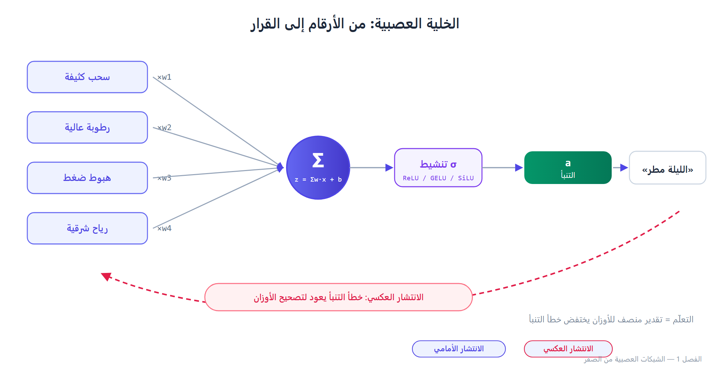
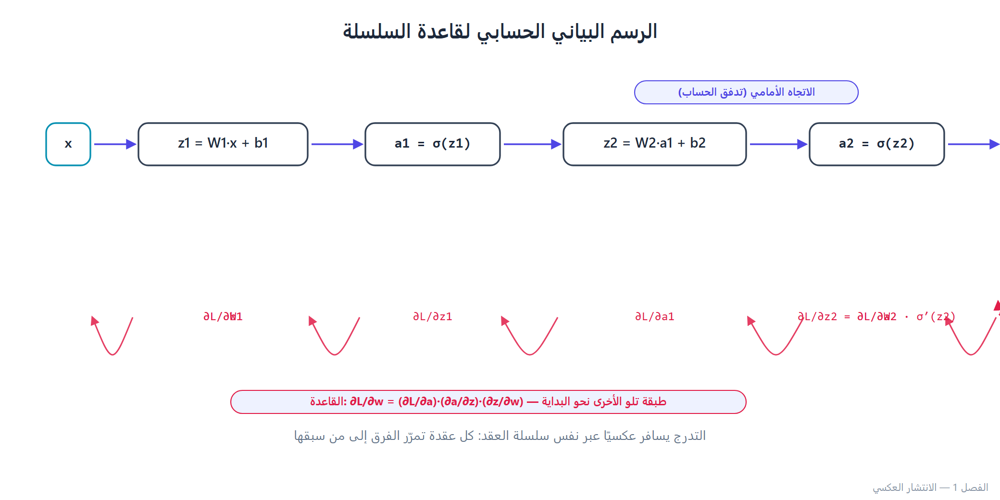

الشبكات العصبية من الصفر — كيف تتعلم الآلة أن “تخمّن” بشكل أفضل
افتتاحية: حكاية الراعي الذي لم يكن يعرف الرياضيات
في قرية صغيرة على سفح جبل، كان هناك راعٍ اسمه “سالم”. لم يدرس الرياضيات يومًا، لكنه كان يعرف تمامًا متى ستمطر السماء. كان ينظر إلى السحاب، ويشمّ الهواء، ويلاحظ سلوك الأغنام، ويقول: “الليلة مطر”. وكان غالبًا على حق.
سأله أحدهم: “كيف تعرف؟” أجاب: “لا أعرف. لكن كلما رأيت سحابًا رماديًا كثيفًا، ورائحة تراب، وأغنامًا تتجمع، أعرف أن المطر قادم”.
سالم، دون أن يدري، كان يشغّل شبكة عصبية في رأسه. المدخلات: لون السحاب، الرائحة، سلوك الأغنام. المخرج: “مطر” أو “لا مطر”. والأوزان التي يمنحها لكل إشارة تعلمها من تجربته عبر السنين. كلما أخطأ، عدّل أوزانه الداخلية. هذا بالضبط ما نسميه في التعلّم العميق: الانتشار الأمامي (Forward Propagation) ثم الانتشار العكسي (Backpropagation) ثم تحديث الأوزان (Weight Update).
هذا الفصل هو محاولة لفهم ما فعله سالم في رأسه، لكن بلغة الرياضيات والكود. سنبدأ من الخلية العصبية الواحدة، ثم نبني شبكة كاملة، ثم ندربها. وسترى أن الفكرة كلها ليست سحرًا، بل حساب تفاضلي مع قليل من الصبر.
1.1 الخلية العصبية الواحدة: أبسط وحدة تعلم
الفكرة في سطر واحد
الخلية العصبية (Neuron) تأخذ مجموعة أرقام، تضرب كل رقم بوزن، تجمعها، تضيف انحيازًا (bias)، ثم تمرر الناتج عبر دالة تنشيط. هذا كل شيء.
رياضيًا:
z = Σᵢ₌₁ⁿ wᵢ xᵢ + b = wᵀ x + b a = σ(z)
حيث:
- x: المدخلات (مثلًا: [طول السحاب، كثافته، رطوبة الهواء]).
- w: الأوزان (كم يهم كل مدخل؟).
- b: الانحياز (ميل الخلية الافتراضي).
- σ: دالة التنشيط (مثل Sigmoid أو ReLU).
- a: المخرج (تنبؤ الخلية).
تشبيه من الحياة
تخيل أنك تريد تقييم مطعم. لديك ثلاثة معايير: الطعام (وزن 0.5)، الخدمة (وزن 0.3)، السعر (وزن 0.2). إذا كان الطعام 9/10، والخدمة 7/10، والسعر 6/10، فالتقييم = 0.5 × 9 + 0.3 × 7 + 0.2 × 6 = 4.5 + 2.1 + 1.2 = 7.8. هذه “خلية عصبية” بدون دالة تنشيط. الأوزان هنا قررتها أنت يدويًا. في الشبكات العصبية، النموذج يتعلمها بنفسه.
دالة التنشيط: لماذا لا نستغني عنها؟
سؤال يستحق التوقف. لو كانت الخلية مجرد z = wᵀx + b، فسيكون النموذج خطيًا بالكامل. وحتى لو رصصت مليون طبقة خطية فوق بعضها، فالناتج النهائي يبقى دالة خطية واحدة (لأن تركيب الدوال الخطية خطي). هذا يعني أن النموذج لن يستطيع تعلم أي علاقة غير خطية، مثل “XOR” أو “هذه الصورة قطة”.
دالة التنشيط تكسر الخطية. أشهرها:
| الدالة | الصيغة | متى تستخدمها | تحذير |
|---|---|---|---|
| Sigmoid | (1)/(1+e⁻ᶻ) | مخرج ثنائي (0/1) في الطبقة الأخيرة | تعاني من تلاشي التدرج (Vanishing Gradient) في الطبقات العميقة |
| Tanh | (eᶻ - e⁻ᶻ)/(eᶻ + e⁻ᶻ) | طبقات مخفية قديمة | نفس مشكلة Sigmoid لكن متمركزة حول الصفر |
| ReLU | max(0, z) | الخيار الافتراضي للطبقات المخفية | قد “تموت” بعض الخلايا (Dead ReLU) إذا كانت المدخلات سالبة دائمًا |
| Leaky ReLU | max(0.01z, z) | بديل لـ ReLU لتجنب موت الخلايا | معامله الصغير قد لا يكفي أحيانًا |
| GELU | z · Φ(z) | المحوّلات الحديثة | أغلى حسابيًا قليلًا من ReLU |
| SiLU/Swish | z · σ(z) | نماذج LLaMA وSwiGLU | شائع جدًا في 2024–2026 |
💡نصيحة: في نماذج المحوّلات الحديثة، GELU أو SiLU هي الخيارات السائدة. ReLU ما زالت رائعة في الشبكات التلافيفية (CNNs) والمهام التقليدية. لا تستخدم Sigmoid في الطبقات المخفية إلا إذا كنت تختبر شيئًا محددًا.
1.2 من خلية واحدة إلى شبكة: الطبقات والانتشار الأمامي
الشبكة كسلسلة من التحويلات
الشبكة العصبية هي ببساطة تكديس لطبقات. كل طبقة تأخذ مخرجات الطبقة السابقة، وتحوّلها:
a⁽¹⁾ = σ(W⁽¹⁾ x + b⁽¹⁾) a⁽²⁾ = σ(W⁽²⁾ a⁽¹⁾ + b⁽²⁾) ⋮ ŷ = softmax(W⁽ᴸ⁾ a⁽ᴸ⁻¹⁾ + b⁽ᴸ⁾)
هذه العملية تسمى الانتشار الأمامي. نمرر المدخلات عبر الطبقات، ونحصل على تنبؤ.
كود: شبكة بسيطة بـ NumPy
سنبني شبكة من طبقة مخفية واحدة، للتصنيف الثنائي. لا PyTorch، لا TensorFlow. فقط NumPy. الهدف: أن ترى كل رقم يتحرك.
import numpy as np # ===== 1. توليد بيانات اصطناعية (مشكلة XOR) ===== # XOR: مخرج = 1 إذا اختلف المدخلان، و0 إذا اتفقا X = np.array([[0, 0], [0, 1], [1, 0], [1, 1]], dtype=np.float32) y = np.array([[0], [1], [1], [0]], dtype=np.float32) # ===== 2. تهيئة الأوزان ===== np.random.seed(42) n_input = 2 n_hidden = 4 n_output = 1 # تهيئة Xavier/Glorot: تقلل مشاكل التدرج W1 = np.random.randn(n_input, n_hidden) * np.sqrt(1.0 / n_input) b1 = np.zeros((1, n_hidden)) W2 = np.random.randn(n_hidden, n_output) * np.sqrt(1.0 / n_hidden) b2 = np.zeros((1, n_output)) # ===== 3. دوال التنشيط ===== def sigmoid(z): # clip لتجنب overflow z = np.clip(z, -500, 500) return 1.0 / (1.0 + np.exp(-z)) def sigmoid_derivative(a): # a هو المخرج بعد sigmoid return a * (1 - a) # ===== 4. الانتشار الأمامي ===== def forward(X, W1, b1, W2, b2): z1 = X @ W1 + b1 a1 = sigmoid(z1) z2 = a1 @ W2 + b2 a2 = sigmoid(z2) return z1, a1, z2, a2 # ===== 5. دالة الخسارة (Binary Cross-Entropy) ===== def bce_loss(y_true, y_pred): eps = 1e-8 # لمنع log(0) y_pred = np.clip(y_pred, eps, 1 - eps) return -np.mean(y_true * np.log(y_pred) + (1 - y_true) * np.log(1 - y_pred)) # ===== 6. الانتشار العكسي ===== def backward(X, y, z1, a1, z2, a2, W2): m = X.shape[0] # حجم الدفعة # تدرج الخسارة بالنسبة لمخرجات الطبقة الأخيرة dz2 = a2 - y # (m, 1) dW2 = a1.T @ dz2 / m # (n_hidden, 1) db2 = np.sum(dz2, axis=0, keepdims=True) / m # تدرج الطبقة المخفية da1 = dz2 @ W2.T # (m, n_hidden) dz1 = da1 * sigmoid_derivative(a1) # (m, n_hidden) dW1 = X.T @ dz1 / m # (n_input, n_hidden) db1 = np.sum(dz1, axis=0, keepdims=True) / m return dW1, db1, dW2, db2 # ===== 7. حلقة التدريب ===== learning_rate = 0.5 epochs = 5000 for epoch in range(epochs): z1, a1, z2, a2 = forward(X, W1, b1, W2, b2) loss = bce_loss(y, a2) dW1, db1, dW2, db2 = backward(X, y, z1, a1, z2, a2, W2) W1 -= learning_rate * dW1 b1 -= learning_rate * db1 W2 -= learning_rate * dW2 b2 -= learning_rate * db2 if epoch % 1000 == 0: print(f"Epoch {epoch:5d} | Loss: {loss:.6f}") # ===== 8. النتائج ===== _, _, _, preds = forward(X, W1, b1, W2, b2) print("\nالتنبؤات بعد التدريب:") for i in range(len(X)): print(f" {X[i]} -> {preds[i][0]:.4f} (المتوقع: {y[i][0]})")
ماذا يحدث في هذا الكود؟
- البيانات: مشكلة XOR، وهي المشكلة الكلاسيكية التي لا يمكن لشبكة خطية حلها. هذا اختبار مهم: إذا كانت شبكتك تحلها، فهي بالفعل غير خطية.
- التهيئة: استخدمنا Xavier، الذي يضبط تباين الأوزان بناءً على عدد المدخلات، لتجنب انفجار أو تلاشي التدرجات منذ البداية.
- الخسارة: Binary Cross-Entropy، الأنسب للتصنيف الثنائي.
- الانتشار العكسي: لاحظ
dz2 = a2 - y. هذا تبسيط جميل ينتج من اشتقاق BCE مع Sigmoid. لو استخدمت دالة خسارة أخرى، ستحتاج اشتقاقًا مختلفًا. - التحديث:
W -= lr * dW. لاحظ علامة الناقص: نتحرك عكس اتجاه التدرج، لأننا نريد تقليل الخسارة.
🤔سؤال يستحق التفكير: لماذا قسمنا على m (حجم الدفعة) في حساب التدرجات؟ الجواب: لأن دالة الخسارة تحسب المتوسط، فالاشتقاق يجب أن يعكس ذلك. لو نسيت القسمة، فإن معدل التعلم الفعلي سيتضاعف مع حجم الدفعة، وقد ينفجر التدريب.
1.3 الانتشار العكسي: القصة الكاملة
لماذا هذا الجزء “مخيف” لكنه منطقي جدًا؟
الانتشار العكسي هو مجرد قاعدة السلسلة (Chain Rule) من حساب التفاضل، مطبقة على رسم بياني حسابي. لا أكثر. لكن المبتدئين يخافون منه لأنه يبدو كأنه “سحر أسود” من الأوراق البحثية.
الفكرة:
- نحسب الخسارة في نهاية الشبكة.
- نسأل: كيف تتغير الخسارة إذا تغير كل وزن قليلًا؟
- نبني الإجابة طبقةً طبقة، من النهاية إلى البداية.
مخطط بسيط
المدخلات X ↓ [الطبقة 1] → a1 ↓ [الطبقة 2] → a2 (التنبؤ) ↓ الخسارة L الانتشار العكسي: L → dL/da2 → dL/dz2 → dL/dW2 → dL/da1 → dL/dz1 → dL/dW1
كل سهم في الاتجاه العكسي يستخدم قاعدة السلسلة: إذا كان L يعتمد على a، وa يعتمد على z، وz يعتمد على w، فإن:
∂ L/∂ w = ∂ L/∂ a · ∂ a/∂ z · ∂ z/∂ w
كود: التحقق من التدرجات (Gradient Checking)
هذه واحدة من أهم العادات التي تميز المهندس المحترف عن الهاوي. الفكرة: احسب التدرج تحليليًا (كما فعلنا)، ثم احسبه عدديًا بتقريب صغير، وقارن. إذا اختلفا بشكل كبير، فهناك خطأ في الكود.
def numerical_gradient(f, x, eps=1e-6): """تقريب التدرج عدديًا باستخدام الفروق المركزية.""" grad = np.zeros_like(x) it = np.nditer(x, flags=['multi_index'], op_flags=['readwrite']) while not it.finished: idx = it.multi_index old = x[idx] x[idx] = old + eps fx_plus = f(x) x[idx] = old - eps fx_minus = f(x) x[idx] = old grad[idx] = (fx_plus - fx_minus) / (2 * eps) it.iternext() return grad # استخدامه للتحقق من W1 def loss_for_W1(W1_val): W1_tmp = W1_val.copy() _, _, _, a2 = forward(X, W1_tmp, b1, W2, b2) return bce_loss(y, a2) # التدرج التحليلي (الذي حسبناه في الكود السابق) z1_, a1_, z2_, a2_ = forward(X, W1, b1, W2, b2) dW1_analytic, _, _, _ = backward(X, y, z1_, a1_, z2_, a2_, W2) # التدرج العددي dW1_numeric = numerical_gradient(loss_for_W1, W1.copy()) diff = np.abs(dW1_analytic - dW1_numeric).max() print(f"أقصى فرق بين التدرجين: {diff:.2e}") # إذا كان الفرق < 1e-6، فالتدرج سليم
🏆نصيحة ذهبية: قبل أن تبدأ تدريب أي نموذج مخصص، تحقق من التدرجات. خطأ واحد في الاشتقاق قد يجعلك تدرب لساعات وتتساءل لماذا لا يتعلم النموذج. هذا اختبار يستغرق دقيقتين ويوفر عليك أيامًا.
⚠️تحذير: التحقق العددي مكلف جدًا (يحسب الدالة مرتين لكل معامل). استخدمه فقط على شبكات صغيرة أو على عينة من المعاملات، ثم أوقفه.
1.4 دوال الخسارة: كيف نقيس “الخطأ”؟
الخسارة ليست مجرد رقم
دالة الخسارة تخبر النموذج ماذا يعني أن يكون مخطئًا. اختيار خاطئ لدالة الخسارة يمكن أن يجعل النموذج يتعلم شيئًا مختلفًا تمامًا عما تريد.
أشهر دوال الخسارة
| الدالة | الاستخدام | الصيغة | ملاحظات |
|---|---|---|---|
| MSE (Mean Squared Error) | الانحدار (Regression) | 1/nΣ(y - ŷ)² | حساسة للقيم الشاذة |
| MAE (Mean Absolute Error) | الانحدار | 1/nΣ |y - ŷ| | أقل حساسية للشواذ |
| BCE (Binary Cross-Entropy) | التصنيف الثنائي | -1/nΣ[ylogŷ + (1-y)log(1-ŷ)] | الأفضل مع Sigmoid |
| CCE (Categorical Cross-Entropy) | التصنيف المتعدد | -Σ yᵢ logŷᵢ | الأفضل مع Softmax |
| Focal Loss | تصنيف غير متوازن | - α (1-ŷ)ᵞ logŷ | تركز على العينات الصعبة |
| KL Divergence | التقطير وتوزيعات الاحتمال | Σ p log(p/q) | ليست متماثلة! |
❌خطأ شائع: استخدام MSE مع مخرجات Softmax في التصنيف. النتيجة: تدرجات صغيرة جدًا وتدريب بطيء. استخدم CCE (أو CrossEntropyLoss في PyTorch، التي تجمع Softmax وCCE معًا).
الفرق بين BCE وCCE في سطر
- BCE: كل عينة يمكن أن تنتمي إلى فئة أو أكثر (multi-label).
- CCE: كل عينة تنتمي إلى فئة واحدة فقط (multi-class).
اختيار خاطئ بينهما سيسبب تدريبًا غير مستقر أو تفسيرات خاطئة.
1.5 الانتقال إلى PyTorch: نفس الفكرة، بأدوات أفضل
لماذا لا نبقى في NumPy؟
لأن PyTorch يقدم:
- الحساب التلقائي للتدرجات (Autograd): لا تكتب الاشتقاق يدويًا.
- GPU: تسريع هائل.
- محسّنات جاهزة: Adam, AdamW, SGD مع الزخم.
- وحدات جاهزة: طبقات، دوال خسارة، تحميل بيانات.
لكن لا تنسَ NumPy. من فهم الفكرة في NumPy، سيفهم PyTorch كأداة تسهيل، لا كصندوق أسود.
كود: نفس مشكلة XOR بـ PyTorch
import torch import torch.nn as nn import torch.optim as optim # البيانات X = torch.tensor([[0, 0], [0, 1], [1, 0], [1, 1]], dtype=torch.float32) y = torch.tensor([[0], [1], [1], [0]], dtype=torch.float32) # النموذج class XORNet(nn.Module): def __init__(self): super().__init__() self.net = nn.Sequential( nn.Linear(2, 4), nn.Sigmoid(), nn.Linear(4, 1), nn.Sigmoid(), ) def forward(self, x): return self.net(x) model = XORNet() # الخسارة والمحسّن criterion = nn.BCELoss() optimizer = optim.Adam(model.parameters(), lr=0.05) # التدريب for epoch in range(2000): optimizer.zero_grad() preds = model(X) loss = criterion(preds, y) loss.backward() # Autograd يحسب التدرجات optimizer.step() # تحديث الأوزان if epoch % 500 == 0: print(f"Epoch {epoch:4d} | Loss: {loss.item():.6f}") # النتائج with torch.no_grad(): print("\nالتنبؤات:") print(model(X).detach().numpy().round(3))
ماذا تغيّر؟
loss.backward()استبدلتbackward()اليدوية.optimizer.step()استبدلتW -= lr * dW.optimizer.zero_grad()ضرورية، لأن PyTorch يجمع التدرجات افتراضيًا. نسيانها يعني تراكم التدرجات عبر الدفعات، وهذا قد يكون مقصودًا أحيانًا (Gradient Accumulation) لكنه خطأ في الحالة العادية.
❌خطأ شائع جدًا: نسيان optimizer.zero_grad(). النتيجة: التدرجات تتراكم، والتدريب ينفجر أو يتصرف بغرابة. إذا وجدت نموذجك “يتعلم” ثم “يفقد ما تعلمه”، فهذا أول ما تفحصه.
⚖️مقارنة سريعة:SGDمعmomentum=0.9لا يزال قويًا في الرؤية الحاسوبية.Adam/AdamWهما الافتراضي في NLP والمحوّلات.AdamWيفصل تسوس الوزن (weight decay) عن تحديث التدرج، وهو الأفضل في النماذج الكبيرة.
1.6 الأخطاء الشائعة: قائمة “لا تفعل”
هذا القسم خلاصة سنوات من الأخطاء التي يقع فيها الجميع، بما فيهم أنا.
1. عدم تطبيع المدخلات
إذا كانت مدخلاتك بأحجام مختلفة جدًا (مثلًا: العمر من 0 إلى 100، والدخل من 0 إلى 1,000,000)، فستكون التدرجات غير متوازنة. بعض الأوزان ستتحدث بعنف، وبعضها بالكاد.
الحل: Normalize أو Standardize.
from sklearn.preprocessing import StandardScaler scaler = StandardScaler() X_train = scaler.fit_transform(X_train) X_test = scaler.transform(X_test) # استخدم نفس المحول!
⚠️تحذير: لا ت-fit على بيانات الاختبار. هذا “تسريب بيانات” (Data Leakage)، ويعطي نتائج مضللة.
2. معدل تعلم ثابت
معدل تعلم كبير جدًا: يتذبذب التدريب أو ينفجر. معدل صغير جدًا: يتقارب ببطء شديد، أو يعلق في منطقة مسطحة.
الحل: جدولة معدل التعلم (Learning Rate Schedule).
scheduler = optim.lr_scheduler.CosineAnnealingLR(optimizer, T_max=epochs) # أو scheduler = optim.lr_scheduler.OneCycleLR( optimizer, max_lr=1e-3, total_steps=epochs * len(dataloader) )
💡تلميح: في المحوّلات، استخدم Warmup (تصاعد تدريجي في البداية) ثم Cosine Decay. هذا ما تفعله معظم النماذج المفتوحة.
3. تهيئة الأوزان بالأصفار
إذا بدأت كل الأوزان بصفر، فكل الخلايا في الطبقة نفسها ستحسب نفس الشيء، وستحصل على نفس التدرج، وستبقى متطابقة إلى الأبد. الشبكة لن تتعلم شيئًا.
الحل: تهيئة عشوائية مناسبة. Xavier/Glorot للـ Tanh/Sigmoid، He/Kaiming للـ ReLU، والتهيئة القياسية في PyTorch عادة جيدة.
4. عدم فصل بيانات التدريب والتحقق والاختبار
إذا دربت وراقبت على نفس البيانات، فسترى خسارة تنخفض بشكل جميل، ثم تتفاجأ بأن النموذج فاشل على بيانات جديدة. هذا الإفراط في التخصيص (Overfitting).
الحل: قسّم بياناتك: 70–80% تدريب، 10–15% تحقق، 10–15% اختبار. لا تلمس مجموعة الاختبار إلا في النهاية.
5. تجاهل توازن الفئات
إذا كانت 95% من بياناتك من فئة واحدة، فقد يتعلم النموذج أن يقول دائمًا “الفئة الأولى” ويحقق دقة 95%، لكنه عديم الفائدة.
الحل: استخدم مقاييس مناسبة (F1، Precision/Recall، AUC)، و/أو أوزان فئات، و/أو إعادة عينات.
6. عدم ضبط البذرة العشوائية (Seed)
تريد إعادة إنتاج النتائج؟ اضبط البذور.
import random, numpy as np, torch def set_seed(seed=42): random.seed(seed) np.random.seed(seed) torch.manual_seed(seed) torch.cuda.manual_seed_all(seed) torch.backends.cudnn.deterministic = True torch.backends.cudnn.benchmark = False
📌ملاحظة: حتى مع البذور، قد تختلف النتائج قليلًا على GPU بسبب عمليات غير حتمية. لا تنزعج.
1.7 أفضل الممارسات: ما يفعله المحترفون فعلًا
- ابدأ بخط أساس بسيط (Baseline). قبل بناء شبكة عميقة، جرّب الانحدار اللوجستي أو شجرة قرار. إذا لم يتفوق التعلم العميق، فالمشكلة ليست في النموذج.
- راقب أكثر من الخسارة. راقب الدقة، F1، توزيع التدرجات، وقت كل دفعة. لوحة مراقبة بسيطة توفر عليك ساعات.
- اكتب اختبارات للكود. اختبار أن شكل المخرجات صحيح، أن الخسارة تنخفض على دفعة صغيرة (Overfit a single batch)، أن التدرجات ليست NaN.
- Overfit a single batch أولًا. إذا لم يستطع نموذجك حفظ 8 عينات، فهناك خطأ في الكود، وليس في البيانات.
- استخدم
torch.no_grad()في التقييم. يوفر ذاكرة ووقتًا كبيرين. - لا تعِد اختراع العجلة. استخدم
nn.CrossEntropyLoss،nn.LayerNorm، إلخ. لكن افهم ما تفعله. - وثّق تجاربك. اسم المجلد، البذرة، المعاملات، النتيجة. “لماذا هذا النموذج أفضل؟” سؤال ستحتاج الإجابة عليه لاحقًا.
1.8 تمرين ختامي: من XOR إلى مشكلة حقيقية
التمرين 1 (مبتدئ)
عدّل كود NumPy لتصنيف ثلاث فئات بدلًا من فئتين. استخدم Softmax وCross-Entropy. تحقق من التدرجات عدديًا.
التمرين 2 (متوسط)
خذ مجموعة بيانات Iris (3 فئات، 4 ميزات). ابنِ شبكة بـ PyTorch، وقارن بين:
- بدون تطبيع.
- مع StandardScaler.
- مع MinMaxScaler.
أي إعداد يتقارب أسرع؟ لماذا؟
التمرين 3 (متقدم)
ابنِ شبكة بثلاث طبقات مخفية. راقب توزيع التدرجات في كل طبقة أثناء التدريب. هل ترى تلاشي التدرج؟ جرّب:
- Sigmoid مقابل ReLU مقابل GELU.
- تهيئة Xavier مقابل He.
- بدون BatchNorm مقابل مع LayerNorm.
سجّل النتائج في جدول. ماذا تلاحظ؟
التمرين 4 (تحدٍّ)
استخدم torch.autograd.gradcheck للتحقق من دالة خسارة مخصصة كتبتها. ثم استخدم torch.profiler لمعرفة أين يقضي النموذج معظم الوقت. هل يمكنك تسريعه؟
خلاصة الفصل: ما يجب أن يبقى في ذهنك
- الشبكة العصبية = دالة قابلة للضبط. الأوزان هي ما نتعلمه، والباقي (البنية، التنشيط، الخسارة) هو ما نصممه.
- الانتشار العكسي = قاعدة السلسلة. لا سحر. إذا فهمت قاعدة السلسلة، فهمت Backprop.
- دالة التنشيط ضرورية للا خطية. بدونها، الشبكة العميقة = نموذج خطي.
- دالة الخسارة تحدد “ماذا يعني أن تكون مخطئًا”. اخترها بحكمة.
- PyTorch تسهّل، لا تلغي الفهم. ابدأ بـ NumPy، ثم انتقل إلى PyTorch.
- الأخطاء الشائعة قاتلة: عدم التطبيع، نسيان
zero_grad، عدم فصل البيانات، معدل تعلم ثابت. تجنبها من البداية. - تحقق من التدرجات. هذه العادة وحدها قد توفر عليك أيامًا.
افتتاحية الفصل القادم: “مفاهيم التعلّم العميق للتدريب والتقييم”
في الفصل التالي، سنغادر XOR الصغيرة، ونواجه أسئلة أكبر: كيف نعرف أن نموذجنا يتعلم فعلًا وليس يحفظ؟ ما الفرق بين Overfitting وUnderfitting، وكيف نعالج كلًا منهما؟ ما هو Dropout، ولماذا يعمل رغم أنه يبدو “تخريبًا متعمدًا”؟ وكيف نختار معدل التعلم المناسب دون تخمين أعمى؟
سنتعلم أيضًا كيف نقرأ منحنيات التدريب كما يقرأ الطبيب تخطيط القلب: كل انحناءة تحكي قصة. وكيف نبني خط أساس قبل أن نبني نموذجًا معقدًا، وكيف نتجنب “فخ الدقة” عندما تكون بياناتنا غير متوازنة.
❓سؤال يفتح الشهية: هل تعلم أن شبكة عصبية بسيطة يمكنها حفظ بيانات عشوائية تمامًا (حتى لو كانت تسمياتها عشوائية)؟ ما معنى ذلك لأفكارنا عن “التعميم”؟ سنكتشف ذلك في الفصل القادم.

